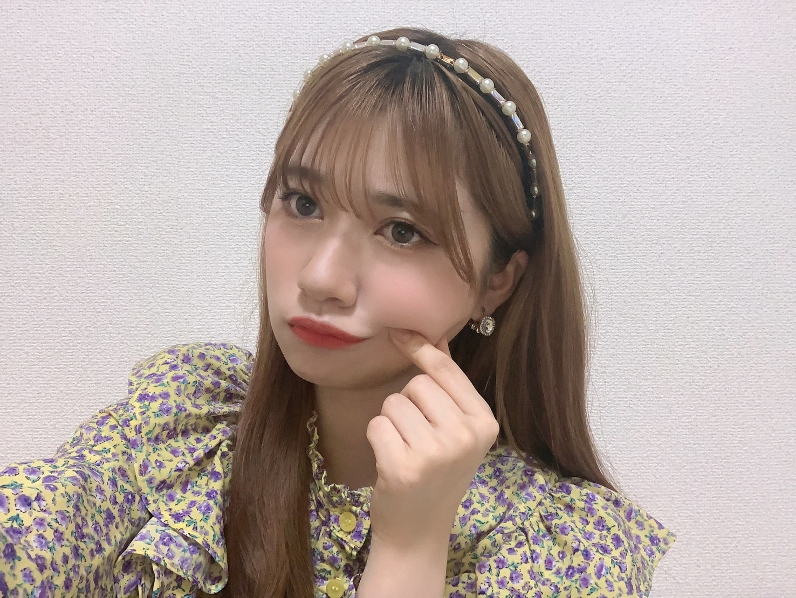

2020/0606Satpiece
久々の質問返しでは、コスメやスキンケア
美容系の質問が思ったよりも多くて
私自身もメンバーのコスメ紹介を見るのが好きなので、、、☺️
今の時代性別とか関係なくメイクをする時代。☺️
身だしなみとか楽しい気持ちになる自分の為に楽しめることは大事ですよね。
私の発言が、初めてのメイク
気になってたけど踏み出せない方の助けになってればなによりですー。☺️
それと同じくらいに
人生相談、お悩み相談が多く感じました。
これもまた誰かの支えになれ
自分が一人の人間として成長できていることを感じ
そして感じさせてくれた皆さんには
本当に心から感謝ですし、宝物です。
出逢ってくれた人
全てが私の宝物だから自信持って 今日も一緒に楽しく生きましょう。☺️
質問返しこの前募集したぶんは
一旦お開きしておりますが
また、このブログのコメント欄で
質問お待ちしてます。☺️
前よりも沢山の質問お待ちしてます。☺️
いつも沢山のコメントありがとうございます。
逆に私からの質問
質問返し以外でやってほしいことありますか？
ブログのなかでも色々まだまだできる事は沢山あるはずです。
どんどん発信していきたいですー。☺️
こういう発信して動くのが私らしいしこういう所から皆と成長してきたと思ってるのでご協力お願い致します！！！
一緒にわくわく楽しもう！！！
本日のお写真
こんな感じもどうですかね。☺️
私は、自分に生まれて
毎日色んな自分を知れて
楽しいよ。☺️

またねー。
2020/06/06 20:00
コメント(749)
蘭世ブログ更新ありがとね！
僕は肌が弱いのでスキンケアは毎日してます！
清潔感ある方がいいしね！
昨日はモバメで色々な雰囲気の蘭世が見られて最高でした！
服装や表情だけでそこまで違いを出せるのは蘭世だからこそだね
ファン想いだし、本当に自慢の推しメンです！
完全に蘭世の影響を受けて自分ができています笑
本当にありがとう！！
最後に質問でーす！
◎おうち時間は何をして過ごしていますか？？
◎黒髪と明るい髪どっちが好きですか？？
◎蘭世に言われた通りゆっくりお風呂に浸かりたいのですが、
オススメの入浴剤はなんですか？？
またコメントするね！
大好き！！
僕は肌が弱いのでスキンケアは毎日してます！
清潔感ある方がいいしね！
昨日はモバメで色々な雰囲気の蘭世が見られて最高でした！
服装や表情だけでそこまで違いを出せるのは蘭世だからこそだね
ファン想いだし、本当に自慢の推しメンです！
完全に蘭世の影響を受けて自分ができています笑
本当にありがとう！！
最後に質問でーす！
◎おうち時間は何をして過ごしていますか？？
◎黒髪と明るい髪どっちが好きですか？？
◎蘭世に言われた通りゆっくりお風呂に浸かりたいのですが、
オススメの入浴剤はなんですか？？
またコメントするね！
大好き！！
ブログ更新ありがとう！！
のぎおび最高だったよ！またブログ更新されるの待ってるね！
早く握手会行きたいよ
のぎおび最高だったよ！またブログ更新されるの待ってるね！
早く握手会行きたいよ
ブログ更新ありがとう
蘭世さんの考え方好きです。
コメント欄読んでくれてますか？
こういうことを言うと逆に負担になっちゃうかな。
二期生とzoomとかしましたか？
蘭世さんの考え方や、物事の見方をブログで知ることができたらいいと思うんですがさすがにこれは難しい
私のちっぽけな発想力では思いつかないけれど、蘭世さんがやれることはいっぱいあるはずだと断言しておきます笑
体調に気をつけてくださいね〜
蘭世さんの考え方好きです。
コメント欄読んでくれてますか？
こういうことを言うと逆に負担になっちゃうかな。
二期生とzoomとかしましたか？
蘭世さんの考え方や、物事の見方をブログで知ることができたらいいと思うんですがさすがにこれは難しい
私のちっぽけな発想力では思いつかないけれど、蘭世さんがやれることはいっぱいあるはずだと断言しておきます笑
体調に気をつけてくださいね〜
最近モバメも多くて凄く嬉しいです。
髪型とか少し気にしたいので、好みの髪型とか知りたいです。
髪型とか少し気にしたいので、好みの髪型とか知りたいです。
蘭世さん、ブログ更新ありがとうございます。
6月に入り、少しずついろいろなモノが動き始めましたね。先日ののぎおび、久しぶりに動く蘭世さんを拝見できて、なんだか安心しました（笑）。
ブログやモバメを多く頂けるのはもちろん嬉しいですけど、やはりリアルに動いている様子は別格でした。
ブログならではの企画、蘭世さんはお洋服がお好きですし、セルフファッションショーとか、お気に入りコーデ紹介とか見てみたいなと思います。
46時間TVまで、残りわずか。体調万全にして当日を楽しみにしております！
6月に入り、少しずついろいろなモノが動き始めましたね。先日ののぎおび、久しぶりに動く蘭世さんを拝見できて、なんだか安心しました（笑）。
ブログやモバメを多く頂けるのはもちろん嬉しいですけど、やはりリアルに動いている様子は別格でした。
ブログならではの企画、蘭世さんはお洋服がお好きですし、セルフファッションショーとか、お気に入りコーデ紹介とか見てみたいなと思います。
46時間TVまで、残りわずか。体調万全にして当日を楽しみにしております！
適当に名前つけて欲しいです。。。。
ブログ更新ありがとうございます！
メイクやコスメのお勉強をすることで将来の彼女やお嫁さんのためにしっかり読むようにしています笑
メイクやコスメのお勉強をすることで将来の彼女やお嫁さんのためにしっかり読むようにしています笑
蘭世の可愛さとまらんぜ!
この前ののぎおび楽しかったです！！
滑走路毎日聞いておりますがやっぱり「どうするの？」は格別でした笑
最近したお料理はなんですかー？
滑走路毎日聞いておりますがやっぱり「どうするの？」は格別でした笑
最近したお料理はなんですかー？
ブログ更新ありがとう！
握手会でもそうだけど、蘭世は質問に対してできる限り考え抜いて答えてくれるので、質問コーナーを読むのが楽しいですありがとう！！
蘭世が自分に生まれて楽しいって書いてくれてるの、なんか自分のことのように嬉しいです。やっぱり応援してる人が自信を持ってくれてるのは良き！
蘭世にブログで企画してほしいことはたくさんあるけど、個人的にすごく見てみたい！って思ってることがありまして、
蘭世の夢であるフォトブックを、現時点でどんな感じにしたいかチラ見せしてくれるコーナーを密かに希望してます。笑
たとえば、どんな要素を取り入れたいとか、どんな写真を入れていきたいとか、こだわりとか、現時点で頭の中にあるものを共有してもらい、ファンも一緒に夢を膨らませていけるのは楽しそうだなと。
可能であればよろしくお願いします。笑
握手会でもそうだけど、蘭世は質問に対してできる限り考え抜いて答えてくれるので、質問コーナーを読むのが楽しいですありがとう！！
蘭世が自分に生まれて楽しいって書いてくれてるの、なんか自分のことのように嬉しいです。やっぱり応援してる人が自信を持ってくれてるのは良き！
蘭世にブログで企画してほしいことはたくさんあるけど、個人的にすごく見てみたい！って思ってることがありまして、
蘭世の夢であるフォトブックを、現時点でどんな感じにしたいかチラ見せしてくれるコーナーを密かに希望してます。笑
たとえば、どんな要素を取り入れたいとか、どんな写真を入れていきたいとか、こだわりとか、現時点で頭の中にあるものを共有してもらい、ファンも一緒に夢を膨らませていけるのは楽しそうだなと。
可能であればよろしくお願いします。笑
6月が誕生日なので祝っていただけたら嬉しいです
最近ブログ多くて嬉しい～٩(๑´꒳ `๑و)
好きな映画のジャンルありますか～？
好きな映画のジャンルありますか～？
らんぜさんやさしさとはなんだとおもいますか？？？？
ブログ更新ありがとう♡
このお洋服見たことある…おうち時間の写真全部好みすぎて嬉しい
のぎおびもありがとう楽しかった〜みながらにやにやしてるっていわれました笑
蘭世にやって欲しいことか…切実にお部屋紹介…笑
もちろんちょこっとでいいんだけど、お洋服にこだわりのある蘭世の部屋がどんな感じなのか気になります！
質問募集もしてくれるのね٩(*´︶`*)۶♡
わーい
蘭世ちゃんは過去に戻りたいと思ったことある？私は最近よく思う
戻れるならいつがいい？？
いつもありがとう。
蘭世のおかげで頑張れることが沢山あります
感謝してます！だいすき〜
このお洋服見たことある…おうち時間の写真全部好みすぎて嬉しい
のぎおびもありがとう楽しかった〜みながらにやにやしてるっていわれました笑
蘭世にやって欲しいことか…切実にお部屋紹介…笑
もちろんちょこっとでいいんだけど、お洋服にこだわりのある蘭世の部屋がどんな感じなのか気になります！
質問募集もしてくれるのね٩(*´︶`*)۶♡
わーい
蘭世ちゃんは過去に戻りたいと思ったことある？私は最近よく思う
戻れるならいつがいい？？
いつもありがとう。
蘭世のおかげで頑張れることが沢山あります
感謝してます！だいすき〜
やっほーです。
6月、5日目で通信制限にかかってしまったどうしようも無いひろみちゃんです。こんばんわ。
更新ありがとう。
お元気そうでなにより。
髪色とっても新鮮でいいですね。
お顔もハッキリしてるから存在感が増します。
ライブとかだと見つけやすそうだなぁ。
ライブも待ち遠しいですね。いかが？やりたい？楽しみ？
【質問】
◯好きなお花って何ですか？
ちょっと改めて聞いてみようかなって。
46時間TVの背景作りの参考にしようかななんて思って聞いてみます。
あとね、ブログとかで見たいなぁって思ったのはね、最近のお気に入りコーデとかかなぁ。
結構女の子の格好とかも参考にしたりするので気になりまする。
握手会まで秘密かな…？笑
まぁ、もし良かったら。
ではでは、今日もゆっくり疲れを取ってくださいね。
いつもありがとう。ばーい。
6月、5日目で通信制限にかかってしまったどうしようも無いひろみちゃんです。こんばんわ。
更新ありがとう。
お元気そうでなにより。
髪色とっても新鮮でいいですね。
お顔もハッキリしてるから存在感が増します。
ライブとかだと見つけやすそうだなぁ。
ライブも待ち遠しいですね。いかが？やりたい？楽しみ？
【質問】
◯好きなお花って何ですか？
ちょっと改めて聞いてみようかなって。
46時間TVの背景作りの参考にしようかななんて思って聞いてみます。
あとね、ブログとかで見たいなぁって思ったのはね、最近のお気に入りコーデとかかなぁ。
結構女の子の格好とかも参考にしたりするので気になりまする。
握手会まで秘密かな…？笑
まぁ、もし良かったら。
ではでは、今日もゆっくり疲れを取ってくださいね。
いつもありがとう。ばーい。
蘭世さん、ブログ更新ありがとう！
蘭世さん、１人釣り顔選手権を希望(>_<)
コメント投票で１位決めて、モバメで続編公開はどうでしょう？！
よろしくお願いいたしますm(__)m
喜章
(よしあき)
蘭世さん、１人釣り顔選手権を希望(>_<)
コメント投票で１位決めて、モバメで続編公開はどうでしょう？！
よろしくお願いいたしますm(__)m
喜章
(よしあき)
蘭世ちゃんが乃木坂で1番思い出に残ってるライブってなんですか？？？
一緒に頑張りましょう(^-^)v
質問とやってほしいリクエストを兼ねて……
普段、料理はしますか？
もししているなら、どんなものを作っているか、レシピとか教えてほしいなと思います
自炊の参考にもしたいので(笑)
普段、料理はしますか？
もししているなら、どんなものを作っているか、レシピとか教えてほしいなと思います
自炊の参考にもしたいので(笑)
ブログ更新ありがとう☺︎
私の場合、美容やファッションは蘭世ちゃんを参考にさせてもらってるし、
蘭世ちゃんの生き方も尊敬できることばかりだから知りたくなります！
これからも蘭世ちゃんが私のインフルエンサーです！☺️
やってほしいことは、もっと蘭世ちゃんの私服をみたいかな！
今はあまりお出掛けとかできないと思うけど、、、
あとは、アクセサリー紹介とかしてほしいです！
最近アクセサリーにハマってるから、小物使いの上手な蘭世ちゃんがどんなもの持ってるのか気になる！参考にしたいです！
またまた質問返ししてくれるんですね！ありがとう☺️
質問です！
蘭世ちゃん、最近も宝塚みてますか？
私は兵庫に住んでるので一度は行ってみたいと思ってます！
過去のブログに書いてあったオススメの作品やご贔屓の方は見させてもらったのですが、最近の蘭世ちゃんの宝塚事情も知りたいです！☺️
質問返しのブログも楽しみにしてます♡
私の場合、美容やファッションは蘭世ちゃんを参考にさせてもらってるし、
蘭世ちゃんの生き方も尊敬できることばかりだから知りたくなります！
これからも蘭世ちゃんが私のインフルエンサーです！☺️
やってほしいことは、もっと蘭世ちゃんの私服をみたいかな！
今はあまりお出掛けとかできないと思うけど、、、
あとは、アクセサリー紹介とかしてほしいです！
最近アクセサリーにハマってるから、小物使いの上手な蘭世ちゃんがどんなもの持ってるのか気になる！参考にしたいです！
またまた質問返ししてくれるんですね！ありがとう☺️
質問です！
蘭世ちゃん、最近も宝塚みてますか？
私は兵庫に住んでるので一度は行ってみたいと思ってます！
過去のブログに書いてあったオススメの作品やご贔屓の方は見させてもらったのですが、最近の蘭世ちゃんの宝塚事情も知りたいです！☺️
質問返しのブログも楽しみにしてます♡
らんぜさんが今までで1番思い出に残ってるライブってなんですか？？
自分は横アリのアンダーライブが1番思い出に残っています。
自分は横アリのアンダーライブが1番思い出に残っています。
ブログ更新ありがとうございます！
今日は期生別の番組が発表されましたね
めっちゃ楽しみなんですが、土曜日に大学の野外調査が入りそうで泣きたいです…
ブログで何をして欲しいかですが、蘭世さんの日常を上げてくれるだけでとっても嬉しいですね！
ただあえてあげるとするならば最近めっちゃやってると噂の料理の写真を載せていただきたいです！僕も自炊生活なので気になります笑
あとはこれから自己満で蘭世さんとお花の写真を使って「てらだらんぜのおはなずかん」をやってみたいなぁなんて思ってるのでそういう写真を載せていただけると嬉しいです
そういえばこの前オンラインミーティング中に「お手伝い」とおをつけて言ったら周りの人に「意外ー！」と驚かれました(実際見た目だけ見れば言いそうにないですね笑)おをいろんな言葉につけてしまうのは完全に蘭世さんに影響されてますね笑ヲタクは推しに似るものなんですかね笑蘭世さんがおをつけて喋ってるのがとても好きです
またブログを楽しみにしてますね
それではまた！
今日は期生別の番組が発表されましたね
めっちゃ楽しみなんですが、土曜日に大学の野外調査が入りそうで泣きたいです…
ブログで何をして欲しいかですが、蘭世さんの日常を上げてくれるだけでとっても嬉しいですね！
ただあえてあげるとするならば最近めっちゃやってると噂の料理の写真を載せていただきたいです！僕も自炊生活なので気になります笑
あとはこれから自己満で蘭世さんとお花の写真を使って「てらだらんぜのおはなずかん」をやってみたいなぁなんて思ってるのでそういう写真を載せていただけると嬉しいです
そういえばこの前オンラインミーティング中に「お手伝い」とおをつけて言ったら周りの人に「意外ー！」と驚かれました(実際見た目だけ見れば言いそうにないですね笑)おをいろんな言葉につけてしまうのは完全に蘭世さんに影響されてますね笑ヲタクは推しに似るものなんですかね笑蘭世さんがおをつけて喋ってるのがとても好きです
またブログを楽しみにしてますね
それではまた！
ブログ更新ありがとうございますー！
メイクとかのブログは自分はしないのでわからないですが、蘭世さんはこんな感じなんだと知るいいきっかけになりました！男子ですけど、メイクは1回くらいしてみたいですね
蘭世さんから言葉をもらうだけで嬉しい人は多いと思うのでみなさん相談されるんでしょうね、人望が厚い証拠だと思います！
また質問受け付けてくれるんですね！
じゃあ、質問という感じではないのですが、
このブログ更新日、6月6日は自分の誕生日で今年やっと20歳になったので、何か一言でもいいから推しの蘭世さんからコメントが欲しいです！
質問返し以外だと、ブログとかでも46時間TVみたいなファッション紹介的な企画をやってほしいです！蘭世さんのコーデが好きなので、どんな服を着てるのかなとか、出来れば全身コーデがみたいです！検討よろしくお願いします！
この期間になり、より発信してくれるのが本当にありがたいです！ブログやモバメで元気もらってます！ありがとうございます！
本日のお写真も可愛くて美しいです！前モバメで送ってくれた写真の続きかな？そのカチューシャが似合ってて好きです！あとピアス？イヤリング？も目立つ感じじゃないけど良き！そして服は黄色がベースになってて紫の花なのかな？もちろん似合ってます！
蘭世さんが楽しめてるとこちらも楽しいです！また蘭世さんらしく発信よろしくお願いします！
今回もありがとうございます～！
黒T
メイクとかのブログは自分はしないのでわからないですが、蘭世さんはこんな感じなんだと知るいいきっかけになりました！男子ですけど、メイクは1回くらいしてみたいですね
蘭世さんから言葉をもらうだけで嬉しい人は多いと思うのでみなさん相談されるんでしょうね、人望が厚い証拠だと思います！
また質問受け付けてくれるんですね！
じゃあ、質問という感じではないのですが、
このブログ更新日、6月6日は自分の誕生日で今年やっと20歳になったので、何か一言でもいいから推しの蘭世さんからコメントが欲しいです！
質問返し以外だと、ブログとかでも46時間TVみたいなファッション紹介的な企画をやってほしいです！蘭世さんのコーデが好きなので、どんな服を着てるのかなとか、出来れば全身コーデがみたいです！検討よろしくお願いします！
この期間になり、より発信してくれるのが本当にありがたいです！ブログやモバメで元気もらってます！ありがとうございます！
本日のお写真も可愛くて美しいです！前モバメで送ってくれた写真の続きかな？そのカチューシャが似合ってて好きです！あとピアス？イヤリング？も目立つ感じじゃないけど良き！そして服は黄色がベースになってて紫の花なのかな？もちろん似合ってます！
蘭世さんが楽しめてるとこちらも楽しいです！また蘭世さんらしく発信よろしくお願いします！
今回もありがとうございます～！
黒T
ブログ更新ありがとう
この間のShowroomの滑走路最高でした！
質問です。
部屋をリフォームしようと思ってます。
どんな感じにしたらいいですかね？
難しくてごめんなさい！よろしくお願いします！
この間のShowroomの滑走路最高でした！
質問です。
部屋をリフォームしようと思ってます。
どんな感じにしたらいいですかね？
難しくてごめんなさい！よろしくお願いします！
今日も一日お疲れ様でした。
これから蒸し暑い日が続くと思います。どうかご自愛ください。
さて、ブログでやっていただきたいことをリクエストさせていただきます。僕は蘭世ちゃんの「言葉」が好きです(もちろん蘭世ちゃんの何もかもが好きなこと今さらは言うまでもないのですが…）なので、蘭世ちゃんが最近読んだ本が知りたいです。僕もよく本を読みます。物語ではなく、評論文や論説文が多いのです。
とても力強い言葉を使うことができる蘭世ちゃんの読む本がとても気になります。よろしくお願いいたします。
これからも微力ではございますが応援しています。頑張ってください。
これから蒸し暑い日が続くと思います。どうかご自愛ください。
さて、ブログでやっていただきたいことをリクエストさせていただきます。僕は蘭世ちゃんの「言葉」が好きです(もちろん蘭世ちゃんの何もかもが好きなこと今さらは言うまでもないのですが…）なので、蘭世ちゃんが最近読んだ本が知りたいです。僕もよく本を読みます。物語ではなく、評論文や論説文が多いのです。
とても力強い言葉を使うことができる蘭世ちゃんの読む本がとても気になります。よろしくお願いいたします。
これからも微力ではございますが応援しています。頑張ってください。
らんぜ！
蘭世は写真集出さないの？めっちゃ楽しみにしてる！！
あまりイメージにないんですが(笑)
好きなスポーツはあるの？
好きなスポーツはあるの？
メンバーの誰と連絡とってますか？
蘭世さんはどこ出身ですか？？ちょっと関西訛りが凄く可愛くて気になりました！
蘭世ブログ更新ありがと！
まじ可愛い愛してる
まじ可愛い愛してる
かわいい
漢検準1級受けるので応援の言葉ください！質問じゃなくてごめんなさい、、
らんぜのコーデ写真とか
普段履いてる靴とか見てみたい！！
普段履いてる靴とか見てみたい！！
ブログ更新ありがとうございます！
次も楽しみにしてます
次も楽しみにしてます
自分は蘭世さんと同い年ですが、やりたいことが見つかり、今から大学に入り直そうと思って受験勉強しています。
正直まだ人生経験は浅いけど、人生で1番悩んで決断しました。
蘭世さんは今までで1番悩んだことはなんですか？
悩んだ時はどう切り抜けますか？
正直まだ人生経験は浅いけど、人生で1番悩んで決断しました。
蘭世さんは今までで1番悩んだことはなんですか？
悩んだ時はどう切り抜けますか？
いろんな髪型みたい！かも！
よろしくお願いします ♂️
よろしくお願いします ♂️
個人的にはのぎおび以外でも配信して欲しいです！
仕事の時間で無ければ絶対観に行きます！
仕事の時間で無ければ絶対観に行きます！
踊るのにオススメの乃木坂のダンスはどれですか？
蘭世さん、こんばんは。
義将(よしのぶ)です。
写真とても素敵です。
見ているだけで癒されますよ。
いつも本当に元気もらってます。
ありがとうね。
それでは、また。
義将(よしのぶ)です。
写真とても素敵です。
見ているだけで癒されますよ。
いつも本当に元気もらってます。
ありがとうね。
それでは、また。
755をやってもらいたいです！2期生だけだと蘭世さんだけやっていないのでファンともっと繋がる機会になるのではないでしょうか？
更新ありがとう！
質問
もし、乃木坂のメンバーではなくファンだったら誰の推しメンタオル買う買いますか？？
質問
もし、乃木坂のメンバーではなくファンだったら誰の推しメンタオル買う買いますか？？
更新ありがと！
SHOWROOMもありがとね！滑走路の"どうするの"久々に聴けて嬉しかったです!!声が綺麗(><)
握手会とかライブの時とかいつも服装や髪型など悩んでしまうので女の子の好きな髪型とか服装とかありますか？
SHOWROOMもありがとね！滑走路の"どうするの"久々に聴けて嬉しかったです!!声が綺麗(><)
握手会とかライブの時とかいつも服装や髪型など悩んでしまうので女の子の好きな髪型とか服装とかありますか？
ブログ更新ありがとう！蘭世のブログいつも楽しみにしてます！今後ショートカットに、する予定はありますか？！蘭世のショート見てみたい！
こんばんは！
蘭世ちゃんのブログ更新とても嬉しくて通知来た瞬間いつも秒で飛んでます笑
蘭世ちゃん香水とか使いますか？使ってたら特にお気に入りのもの教えて欲しいです！♡♡
蘭世ちゃんのブログ更新とても嬉しくて通知来た瞬間いつも秒で飛んでます笑
蘭世ちゃん香水とか使いますか？使ってたら特にお気に入りのもの教えて欲しいです！♡♡
蘭世ちゃん！今日めっちゃ可愛い
うーん、久しぶりに蘭世ちゃんに自己紹介してもらいたいなぁ〜！
蘭世ちゃん好きになってもう少しで3年♡
本当に長く好きでいて良かったです。これからもついて行きます！頑張ってね！
うーん、久しぶりに蘭世ちゃんに自己紹介してもらいたいなぁ〜！
蘭世ちゃん好きになってもう少しで3年♡
本当に長く好きでいて良かったです。これからもついて行きます！頑張ってね！
ブログ更新ありがとう！！！
三枚目の写真の角度！めっちゃ可愛い！！！色気ある＾＾
らんらんみたいにモデルさんみたいな写真のポーズが自然に撮れちゃうのって女の子の憧れだよね、羨ましい！！！
今日も癒しをありがとう
三枚目の写真の角度！めっちゃ可愛い！！！色気ある＾＾
らんらんみたいにモデルさんみたいな写真のポーズが自然に撮れちゃうのって女の子の憧れだよね、羨ましい！！！
今日も癒しをありがとう
質問です！
金沢市へ来たことはありますか？
なにかイメージとかありますか？
金沢市へ来たことはありますか？
なにかイメージとかありますか？
蘭世ちゃん今日もブログ更新ありがとう〜！
テストも無事に終わったよ！！頑張った（>_<）
今日は休校分を取り戻すため？？の土曜日登校だったよ！
久しぶりに体育あってしかも好きなバレーボールだったからめちゃくちゃ嬉しくて頑張りすぎたらめっちゃ疲れた。笑
蘭世は運動たくさんするイメージないけどこのスポーツ好きだな〜とか見てて楽しいな〜ってのある？？
蘭世に質問返し以外にやってほしいこと！
私蘭世の生誕Tシャツのイラストだったり、蘭世のイラストがすごく好きなの！
だからブログにイラスト載せて欲しいな！！って思う
蘭世の前髪ありかわいい（>_<）
あ！いつも自撮りに使ってるフィルターとかも知りたいかな！！
次の更新も待ってるね
テストも無事に終わったよ！！頑張った（>_<）
今日は休校分を取り戻すため？？の土曜日登校だったよ！
久しぶりに体育あってしかも好きなバレーボールだったからめちゃくちゃ嬉しくて頑張りすぎたらめっちゃ疲れた。笑
蘭世は運動たくさんするイメージないけどこのスポーツ好きだな〜とか見てて楽しいな〜ってのある？？
蘭世に質問返し以外にやってほしいこと！
私蘭世の生誕Tシャツのイラストだったり、蘭世のイラストがすごく好きなの！
だからブログにイラスト載せて欲しいな！！って思う
蘭世の前髪ありかわいい（>_<）
あ！いつも自撮りに使ってるフィルターとかも知りたいかな！！
次の更新も待ってるね


らんぜと出会うことができたという事実が自分にとって本当に重要なことだったんだなって思うんだよね！
ありがとう！
自分も自分で生きてて楽しいって思えるように頑張りたいな！
このまえののぎおびとかも観てると蘭世はすごく楽しそうにしてるからこっちも楽しくなったよ！！
めっちゃよかった！
またやってねー！
次のブログ更新も楽しみにしてるよ〜